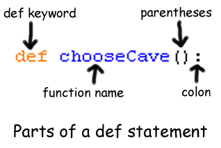
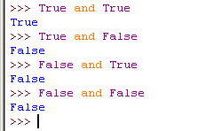
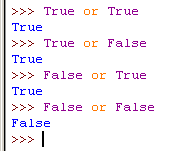
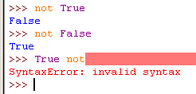
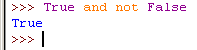
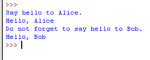
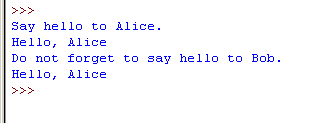
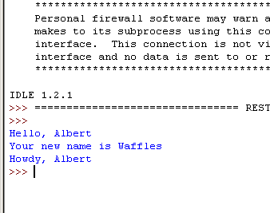
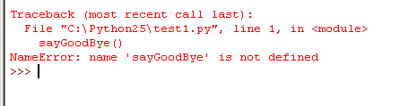
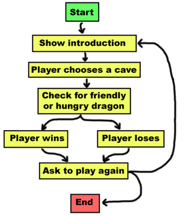

In this game, the player is on a planet of dragons. The dragons all live in caves with their large piles of collected treasure. Some dragons are friendly, and will share their treasure with you. Other dragons are greedy and hungry, and will eat anyone who enters their cave. The player is in front of two caves, one with a friendly dragon and the other with a hungry dragon. The player is given a choice between the two.
Open a new file editor window by clicking on the File menu, then click on New Window. In the blank window that appears, type in the source code and save the source code as dragon.py. Then run the program by pressing F5.
You are on a planet full of dragons. In front of you,
you see two caves. In one cave, the dragon is friendly
and will share his treasure with you. The other dragon
is greedy and hungry, and will eat you on sight.
Which cave will you go into? (1 or 2)
1
You approach the cave...
It is dark and spooky...
A large dragon jumps out in front of you! He opens his jaws and...
Gobbles you down in one bite!
Do you want to play again? (yes or no)
no
dragon.py
- import random
- import time
- def displayIntro():
- print 'You are on a planet full of dragons. In front of you,'
- print 'you see two caves. In one cave, the dragon is friendly'
- print 'and will share his treasure with you. The other dragon'
- print 'is greedy and hungry, and will eat you on sight.'
- def chooseCave():
- cave = ''
- while cave != '1' and cave != '2':
- print 'Which cave will you go into? (1 or 2)'
- cave = raw_input()
- return cave
- def checkCave(chosenCave):
- print 'You approach the cave...'
- time.sleep(2)
- print 'It is dark and spooky...'
- time.sleep(2)
- print 'A large dragon jumps out in front of you! He opens his jaws and...'
- time.sleep(2)
- friendlyCave = random.randint(1, 2)
- if chosenCave == str(friendlyCave):
- print 'Gives you his treasure!'
- else:
- print 'Gobbles you down in one bite!'
- playAgain = 'yes'
- while playAgain == 'yes' or playAgain == 'y':
- displayIntro()
- caveNumber = chooseCave()
- checkCave(caveNumber)
- print 'Do you want to play again? (yes or no)'
- playAgain = raw_input()
Let's look at the source code in more detail.
- import random
- import time
Here we have two import statements. We import the random module like we did in the "Guess the Number" game. In Dragon World, we will also want some time-related functions that the time module includes, so we will import that as well.
- def displayIntro():
- print 'You are on a planet full of dragons. In front of you,'
- print 'you see two caves. In one cave, the dragon is friendly'
- print 'and will share his treasure with you. The other dragon'
- print 'is greedy and hungry, and will eat you on sight.'
Here is a new type of statement, the def statement. The def statement is made up of the def keyword, followed by a function name with parentheses, and then a colon (the : sign). There is a block after the statement called the def-block.

The def statement isn't a call to a function named displayIntro(). Instead, the def statement means we are creating, or defining, a new function that we can call later in our program. After we define this function, we can call it the same way we call other functions. When we call this function, the code inside the def-block will be executed.
We also say we define variables when we create them with an assignment statement. The code spam = 42 defines the variable m.
Remember, the def statement doesn't execute the code right now, it only defines what code is executed when we call the displayIntro() function later in the program. When the program's execution reaches a def statement, it skips down to the end of the def-block. We will jump back to the top of the def-block when the displayIntro() function is called. It will then execute all the print statements inside the def-block. So we call this function when we want to display the "You are on a planet full of dragons..." introduction to the user.
When we call the displayIntro() function, the program's execution jumps to the start of the function on line 5. When the function's block ends, the program's execution returns to the line that called the function.
- def chooseCave():
Here we are defining another function called chooseCave. The code in this function will prompt the user to select which cave they should go into.
- cave = ''
- while cave != '1' and cave != '2':
Inside the chooseCave() function, we create a new variable called cave and store a blank string in it. Then we will start a while loop. This while statement's condition contains a new operator we haven't seen before called and. Just like the - or * are mathematical operators, and == or != are comparison operators, the and operator is a boolean operator.
Boolean logic deals with things that are either true or false. This is why the boolean data type only has two values, True and False. Boolean statements are always either true or false. If the statement is not true, then it is false. And if the statement is not false, then it is true.
Do you remember how the * operator will combine two integer values and produce a new integer value (the product of the two original integers)? And do you also remember how the + operator can combine two strings and produce a new string value (the concatenation of the two original strings)? The and operator combines two boolean values to produce a new boolean value. Here's how the and operator works.
Think of the sentence, "Cats have whiskers and dogs have tails." This sentence is true, because "cats have whiskers" is true and "dogs have tails" is also true.
But the sentence, "Cats have whiskers and dogs have wings." would be false. Even though "cats have whiskers" is true, dogs do not have wings, so "dogs have wings" is false. The entire sentence is only true if both parts are true because the two parts are connected by the word "and". If one or both parts are false, then the entire sentence is false.
The and operator in Python works this way too. If the boolean values on both sides of the and keyword are True, then the expression with the and operator evaluates to True. If either of the boolean values are False, or both of the boolean values are False, then the expression evaluates to False.
So let's look at line 13 again:
- while cave != '1' and cave != '2':
This condition is made up of two expressions connected by the and operator. We first evaluate these expressions to get their boolean values. Then we evaluate the boolean values with the and operator.
The string value stored in cave when we first execute this while statement is the blank string, ''. The blank string does not equal the string '1', so the left side evaluates to True. The blank string also does not equal the string '2', so the right side evaluates to True. So the condition then turns into True and True. Because both boolean values are True, the condition finally evaluates to True. And because the while statement's condition is True, the program execution enters the while-block.
This is all done by the Python interpreter, but it is important to understand how the interpreter does this. This picture shows the steps of how the interpreter evaluates the condition (if the value of cave is the blank string):
while cave != '1' and cave != '2':
while '' != '1' and cave != '2':
while True and cave != '2':
while True and '' != '2':
while True and True:
while True:
Try typing the following into the interactive shell:
True and True
True and False
False and True
False and False

There are two other boolean operators. The next one is the or operator. The or operator works similar to the and, except it will evaluate to True if EITHER of the two boolean values are True. The only time the or operator evaluates to False is if both of the boolean values are False.
The sentence "Cats have whiskers or dogs have wings." is true. Even though dogs don't have wings, when we say "or" we mean that one of the two parts is true. The sentence "Cats have whiskers or dogs have tails." is also true. (Most of the time when we say this OR that, we mean one thing is true but the other thing is false. In programming, "or" means that either of the things are true, or maybe both of the things are true.)
Try typing the following into the interactive shell:
True or True
True or False
False or True
False or False

The third boolean operator is not. The not operator is different from every other operator we've seen before, because it only works on one value, not two. There is only value on the right side of the not keyword, and none on the left. The not operator will evaluate to True as False and will evaluate False as True.
Try typing the following into the interactive shell:
not True
not False
True not

Notice that if we put the boolean value on the left side of the not operator results in a syntax error.
We can use both the and and not operators in a single expression. Try typing True and not False into the shell:

Normally the expression True and False would evaluate to False. But the True and not False expression evaluates to True. This is because not False evaluates to True, which turns the expression into True and True, which evaluates to True.
If you ever forget how the boolean operators work, you can look at these charts, which are called truth tables:
| A | and | B | is | Entire statement |
| True | and | True | is | True |
| True | and | False | is | False |
| False | and | True | is | False |
| False | and | False | is | False |
| A | or | B | is | Entire statement |
| True | or | True | is | True |
| True | or | False | is | True |
| False | or | True | is | True |
| False | or | False | is | False |
| not A | is | Entire statement |
| not True | is | False |
| not False | is | True |
- print 'Which cave will you go into? (1 or 2)'
- cave = raw_input()
Here, the player is asked to enter which cave they chose to enter by typing in 1 or 2 and hitting enter. Whatever string the player typed will be stored in cave. After this code is executed, we jump back to the top of the while statement and recheck the condition. Remember that the line was:
- while cave != '1' and cave != '2':
If this condition evaluates to True, we will enter the while-block again and ask the player for a cave number to enter. But if the player typed in 1 or 2, then the cave value will either be '1' or '2'. This causes the condition to evaluate to False, and the program execution will continue on past the while loop.
The reason we have a loop here is because the player may have typed in 3 or 4 or HELLO. Our program doesn't make sense of this, so if the player did not enter 1 or 2, then the program loops back and asks the player again. In fact, the computer will patiently ask the player for the cave number over and over again until the player types in 1 or 2. When the player does that, the while-block's condition will be False, and we will jump down past the while-block and continue with the program.
- return cave
This is the return keyword, which only appears inside def-blocks. Remember how the raw_input() function returns the string value that the player typed in? Or how the randint() function will return a random integer value? Our function will also return a value. It returns the string that is stored in cave.
This means that if we had a line of code like spam = chooseCave(), the code inside chooseCave() would be executed and the function call will evaluate to chooseCave()'s return value. The return value will either be the string '1' or the string '2'. (Our while loop guarantees that chooseCave() will ONLY return either '1' or '2'.)
The return keyword is only found inside def-blocks. Once the return statement is executed, we immediately jump out of the def-block. (This is like how the break statement will make us jump out of a while-block.) The program execution moves back to the line that had called the function.
You can also use the return keyword by itself just to break out of the function, just like the break keyword will break out of a while-loop.
You should note that the value stored in the cave variable in the chooseCave() function is forgotten after the execution leaves the function. Just like the values in our program's variables are forgotten after the program ends, variables inside the function are forgotten after the execution leaves the function. Note only that, but when execution is inside the function, we cannot see the variables outside of the function, or variables inside other functions. We call this the variable's scope. The only variables that we can use inside a function are the ones we create inside of the function. That is, the scope of the variable is inside in the function's block. The scope of variables created outside of functions is everywhere in the program outside of def-blocks.
Not only that, but if we have a variable named spam created outside of a function, if we create a variable named spam inside of the function, the Python interpreter will consider them to be two separate variables. That means we can change the value of spam inside the function, and this will not change the spam variable that is outside of the function. This is because these variables have different scopes.
We have names for these scopes. The scope outside of all functions is called the global scope. The scope inside of a function is called the local scope. The entire program has only one global scope, but each function has a local scope of its own.
Variables defined in the global scope can be used outside and inside functions. Variables defined in a function's local scope can only be used inside that function.
When exactly is a variable defined? A variable is defined the first time we use it in an assignment statement. When the program first executes the line:
- cave = ''
...the variable cave is defined.
If we call the chooseCave() function twice, the value stored in the variable the first time won't be remember the second time around. This is because when the execution left the chooseCave() function (that is, left chooseCave()'s scope), the cave variable was forgotten and destroyed. But it will be defined again when we call the function a second time.
The important thing to remember is that the value of a variable in the local scope is not remembered in between function calls.
- def checkCave(chosenCave):
Now we are defining yet another function named checkCave(). Notice that we put the text chosenCave in between the parentheses. This is a type of variable called a parameter. For some functions, we would pass an argument, like for the str() or randint() functions:
str(guessesTaken)
random.randint(1, 20)
When we call checkCave(), we will also pass one value to it as an argument. When execution moves inside the checkCave() function, a new variable named chosenCave will be assigned this value. This is how we pass variable values to functions since functions cannot read variables outside of the function (that is, outside of the function's scope).
For example, here is a short program that demonstrates parameters. Imagine we had a short program that looked like this:
def sayHello(name):
print 'Hello, ' + name
print 'Say hello to Alice.'
fizzy = 'Alice'
sayHello(fizzy)
print 'Do not forget to say hello to Bob.'
sayHello('Bob')
If we run this program, it would look like this:

This program calls a function we have created, sayHello() and first passes the value in the fizzy variable as an argument to it. (We stored the string 'Alice' in fizzy.) Later, the program calls the sayHello() function again, passing the string 'Bob' as an argument.
The value in the fizzy variable and the string 'Bob' are arguments. We send values as arguments to a function. The variable name is a parameter. Parameters are always local variables and only exist inside the function. That is the difference between arguments and parameters. It might be easier to just remember that the thing in between the parentheses in the def statement is an argument, and the thing in between the parentheses in the function call is a parameter.
We could have just used the fizzy variable inside the sayHello() function instead of using a parameter. (This is because the local scope can still see variables in the global scope.) But then we would have to remember to assign the fizzy variable a string each time before we call the sayHello() function. Parameters make our programs simpler. Look at this code:
def sayHello():
print 'Hello, ' + fizzy
print 'Say hello to Alice.'
fizzy = 'Alice'
sayHello()
print 'Do not forget to say hello to Bob.'
sayHello()
When we run this code, it looks like this:

This program's sayHello() function does not have a parameter, but uses the global variable fizzy directly. Remember that you can read global variables inside of functions, you just can't read local variables outside of the function. But now we have to remember to set the fizzy variable before calling sayHello(). In this program, we forgot to do so, so the second time we called sayHello() the value of fizzy was still 'Alice'. Using parameters makes function calling simpler to do, especially when our programs are very big and have many functions.
Now look at this program, which is a bit different:
def spam(myName):
print 'Hello, ' + myName
myName = 'Waffles'
print 'Your new name is ' + myName
myName = 'Albert'
spam(myName)
print 'Howdy, ' + myName
If we run this program, it would look like this:

This program defines a new variable called myName and stores the string 'Albert' in it. Then the program calls the spam() function, passing the value in myName as an argument. The execution moves to the spam() function. The parameter in spam() is also named myName, and has the argument assigned to it. Remember, the myName inside the spam() function (the local scope) is considered a different variable than the myName variable outside the function (the global scope).
The function then prints 'Hello, Albert', and then on the next line changes the value in myName to 'Waffles'. Remember, this only changes the myName variable that is inside the function. The myName variable that is outside the function still has the value 'Albert' stored in it.
The function now prints out 'Your new name is Waffles', because the myName variable in the local scope has changed to 'Waffles'. The execution has reached the end of the function, so it jumps back down to where the function call was. The local myName is destroyed and forgotten. The next line after that is print 'Howdy, ' + myName, which will display Howdy, Albert.
Remember, the myName outside of functions (that is, in the global scope) still has the value 'Albert', not 'Waffles'. This is because the myName in the global scope and the myName in spam()'s local scope are different variables, even though they have the same name.
A function's definition (where we put the def statement and the def-block) has to come before you call the function. This is like how you must assign a value to a variable before you can use the variable. If you put the function call before the function defintion, you will get an error. Look at this code:
sayGoodBye()
def sayGoodBye():
print 'Good bye!'
If you try to run it, Python will give you an error message that looks like this:

To fix this, put the function definition before the function call:
def sayGoodBye():
print 'Good bye!'
sayGoodBye()
- print 'You approach the cave...'
- time.sleep(2)
We display some text to the player, and then call the time.sleep() function. Remember how in our call to randint(), the function randint() is inside the random module? In the dragon world game, we also imported the time module. The time module has a function called sleep() that will pause the program for a few seconds. We pass the integer value 2 as an argument to the time.sleep() function to tell it to pause for exactly 2 seconds.
- print 'It is dark and spooky...'
- time.sleep(2)
Here we print some more text and wait again for another 2 seconds. These short pauses add suspense to the game, instead of displaying all the text all at once. In our jokes program, we called the raw_input() function to wait until the player pressed the enter key. Here, the player doesn't have to do anything at all except wait.
- print 'A large dragon jumps out in front of you! He opens his jaws and...'
- time.sleep(2)
We have new action happening in our program. What does the dragon do?
- friendlyCave = random.randint(1, 2)
Now we are going to have the program randomly chose which cave had the friendly dragon in it. Our call to the random.randint() function will return either the integer 1 or the integer 2, and store this value in a variable called friendlyCave.
- if chosenCave == str(friendlyCave):
- print 'Gives you his treasure!'
Here we check if the integer of the cave we chose ('1' or '2') is equal to the cave randomly selected to have the friendly dragon. But wait, the value in chosenCave was a string (because raw_input() returns strings) and the value in friendlyCave is an integer (because random.randint() returns integers). We can't compare strings and integers with the == sign, because they will always be different ('1' does not equal 1).
So we are passing friendlyCave to the str() function, which returns the string value of friendlyCave.
What the condition in this if statement is really comparing is the string in chosenCave and the string returned by the str() function. We could have also had this line instead:
if int(chosenCave) == friendlyCave:
Then the if statement's condition would compare the integer value returned by the int() function to the integer value in friendlyCave. The return value of the int() function is the integer form of the string stored in chosenCave.
If the if statement's condition evaluates to True, we tell the player they have won the treasure.
- else:
- print 'Gobbles you down in one bite!'
Line 32 has a is a new keyword. The else keyword always comes after the if-block. The else-block that follows the else keyword executes if the condition in the if statement was False. Think of it as the program's way of saying, "If this condition is true then execute the if-block or else execute the else-block."
Remember to put the colon (the : sign) after the else keyword.
You may have noticed that we always place a colon at the end of if, else, while, and def statements. The colon marks the end of the statement, and tells us that the next line should be the beginning of a new block.
- playAgain = 'yes'
This is the first line that is not a def statement or inside a def-block. This line is where our program really begins.
- while playAgain == 'yes' or playAgain == 'y':
Here is the beginning of a while loop. We enter the loop if playAgain is equal to either 'yes' or 'y'. The first time we come to this while statement, we have just assigned the string value 'yes' to the playAgain variable. That means this condition will be True.
- displayIntro()
Here we call the displayIntro() function. This isn't a Python function, it is our function that we defined earlier in our program. When this function is called, the program execution jumps to the first line in the displayIntro() function on line 5. When all the lines in the function are done, the execution jumps back down to the line after this one.
- caveNumber = chooseCave()
This line also calls a function that we created. Remember that the chooseCave() function lets the player type in the cave they choose to go into. When the return cave line in this function executes, the program execution jumps back down here, and the local variable cave's value is the return value of this function. The return value is stored in a new variable named caveNumber. Then the execution moves to the next line.
- checkCave(caveNumber)
This line calls our checkCave() function with the argument of caveNumber's value. Not only does execution jump to line 20, but the value stored in caveNumber is copied to the parameter chosenCave inside the checkCave() function. This is the function that will display either 'Gives you his treasure!' or 'Gobbles you down in one bite!', depending on the cave the player chose to go in.
- print 'Do you want to play again? (yes or no)'
- playAgain = raw_input()
After the game has been played, the player is asked if they would like to play again. The variable playAgain stores the string that the user typed in. Then we reach the end of the while-block, so the program rechecks the while statement's condition: while playAgain == 'yes' or playAgain == 'y'
The difference is, now the value of playAgain is equal to whatever string the player typed in. If the player typed in the string 'yes' or 'y', then we would enter the loop again at line 38.
If the player typed in 'no' or 'n' or something silly like 'Abraham Lincoln', then the while statement's condition would be False, and we would go to the next line after the while-block. But since there are no more lines after the while-block, the program terminates.
But remember, the string 'YES' is different from the string 'yes'. If the player typed in the string 'YES', then the while statement's condition would evaluate to False and the program would still terminate.
We've just completed our second game! In our Dragon World game, we used a lot of what we learned in the "Guess the Number" game and picked up a few new tricks as well. If you didn't understand some of the concepts in this program, then read the summary at the end of this chapter, or go over each line of the source code again, or try changing the source code and see how the program changes. In the next chapter we won't create a game, but a computer program that will create secret codes out of ordinary messages and also decode the secret code back to the original message.
But first, let's trace the code one more time. A lot of new programming ideas were taught in this chapter. To help you understand everything, I will briefly go through the program just like the computer would, starting from the top.
- import random
- import time
We import the random and time modules, so that we can use the random.randint() and time.sleep() functions in our program.
- def displayIntro():
This defines a new function. We do not execute the code inside this function block (because this function is being defined, not called). We just define it so that we can call this function later.
- def chooseCave():
We define another function. Again, we skip past it for now.
- def checkCave(chosenCave):
We define a third function. Again, we skip it for now because we are only defining the function, not calling it.
- playAgain = 'yes'
The variable playAgain now has the string value of 'yes'.
- while playAgain == 'yes' or playAgain == 'y':
This is the start of a while-block. The value of playAgain is 'yes' (we set it in the last line), so the condition evaluates to True and False, evaluates to False. But remember that True or False will evalute to True. So since the condition is True, we enter the while-loop.
- displayIntro()
Now we are calling the displayIntro() function. You can tell this is a function call, and not defining a function because there is no def keyword in front of the function name. Now we jump back to the beginning of the displayIntro() function on line 4.
- def displayIntro():
The program execution has jumped to line 4. We move down to the next line, which is line 5.
- print 'You are on a planet full of dragons. In front of you,'
- print 'you see two caves. In one cave, the dragon is friendly'
- print 'and will share his treasure with you. The other dragon'
- print 'is greedy and hungry, and will eat you on sight.'
We print out the game introduction. This is the first text that the player sees, because this is the first time we have executed a print statement. The print statement without a string will just print a blank line. We know we have reached the end of this def-block, because line 11 does begin with less than four spaces. This means the execution jumps back down to line 38 (the line that sent us here).
- displayIntro()
We just made this call, so we move down to the next line.
- caveNumber = chooseCave()
We are going to assign the return value of the chooseCave() function to the variable caveNumber. In order to figure out what the return value is, we have to call the function. This moves the execution to line 11.
- def chooseCave():
Here we are at line 11. This line doesn't do anything, it just marks the beginning of the chooseCave function. We move down to line 12.
- cave = ''
The value of the cave variable is now the blank string.
- while cave != '1' and cave != '2':
Here is the start of a while-block. To see if we enter the block or not, we check if the condition is true. cave != '1' evaluates to True, because the blank string is not equal to the string '1'. And cave != '2' also evaluates to True. So the condition evaluates to True and True. Both sides of the and operator must be True for the expression to evaluate to True, otherwise it will be False. True and True evaluates to True, so we do enter the while-loop at line 14.
- print 'Which cave will you go into? (1 or 2)'
This line prints a question to the player. Move down to the next line.
- cave = raw_input()
The return value of the raw_input() function will be stored in the cave variable. The raw_input() question will let the player type in a string, and this string will be the return value. Let's say the player accidentally types in 3. The string value '3' will be the new value of the cave.
We have reached the end of the while-block (we know this because the next line (line 17) does not begin with 8 spaces). So execution jumps back to the top of the while-block at line 13.
- while cave != '1' and cave != '2':
Now we re-evaluate the while statement's condition. The value of cave this time is '3'. The '3' != '1' expression is True, and the '3' != '2' expression is True. And because True and True evaluates to True, we have to re-enter the while-block again.
Until the player types in the string '1' or '2', this while statement's condition will be True and the program will keep asking the user for which cave they want to enter.
- print 'Which cave will you go into? (1 or 2)'
Again, we display a message that asks the player which cave they want to enter. Move down to the next line.
- cave = raw_input()
Let's say the player this time enters the string '2'. This string is stored in cave. We've reached the end of the while-block, so we jump back up to the start of the while-block to line 13 one more time.
- while cave != '1' and cave != '2':
Now we re-evaluate the while statement's condition. cave now equals '2'. The expression cave != '1' is True. The expression cave != '2' is False, because cave really does equal '2'. The expression evaluates to True and False. This expression evaluates to False. Because the while statement's condition is now False, we skip past the while-block to the next line after it, which is line 17.
- return cave
The return statement will return the value inside the cave variable, which is the string '2'. Execution goes back to where this function was called from, which was line 40.
- caveNumber = chooseCave()
Here we are back at line 40. But this time we know that the return value of this call to chooseCave() is the string '2', so we store this string in the caveNumber variable. Move to the next line.
- checkCave(caveNumber)
Now we call the checkCave() function. This function has one parameter. We will pass the value inside caveNumber (the string '2') as an argument for this parameter. Execution jumps up to line 19.
- def checkCave(chosenCave):
Now we are at the top of the checkCave() function. Since the string '2' was passed as the argument for the first parameter, the variable chosenCave will be assigned the string '2'. When we jump back out of this function (and leave the function's scope), the value inside chosenCave() will be erased. Move down to the next line.
- print 'You approach the cave...'
We print a message to the player in this line.
- time.sleep(2)
We call the sleep() function (which is inside the time module). The sleep() function has one parameter, so we pass 2 as the argument for this parameter. The sleep() function pauses for however many seconds is given for the parameter. We make the program pause for two seconds, to add suspense for the player.
- print 'It is dark and spooky...'
- time.sleep(2)
We display another message to the player, and wait two seconds again.
- print 'A large dragon jumps out in front of you! He opens his jaws and...'
- time.sleep(2)
We display another message telling the player the dragon has jumped out, followed by a blank line. We then pause again for two seconds, to let the player wonder what the dragon is going to do.
- friendlyCave = random.randint(1, 2)
The friendlyCave variable will be assigned the return value of the random.randint() function. The randint() function returns a random integer between the two numbers we pass to the two parameters. We want a random number between 1 and 2 (including 1 and 2). Pretend that the integer 1 was returned by the function call. So 1 is stored in friendlyCave. Remember, this function call could have returned either a 1 or a 2. We don't know which until we actually run the program, and it won't always return the same number each time we call the function. But we will just pretend that this time it returned a 1.
- if chosenCave == str(friendlyCave):
This is an if statement. We must check if '2' (the string stored inside chosenCave) is equal to what str(friendlyCave) evaluates to. str() is a function that returns the string form of any integers passed to it. (Remember, the string value '7' is not equal to the integer value 7.)
friendlyCave evaluates to the integer 1 that is stored inside of it. So the function call looks like str(1) and returns a value of '1'.
So now, to finish evaluating the if statement's condition, we see if '2' == '1'. This evaluates to False, because they are not the same. So execution skips past the if-block.
- else:
This is the first line after the if-block. It is the else keyword, which means that if the previous if statement's condition was False, we should execute the code inside the else-block. This means we move down one line to line 33, which is inside the else-block.
- print 'Gobbles you down in one bite!'
The player has been eaten. There are no more lines in the function, so execution goes back to line 42.
- checkCave(caveNumber)
We have just come back from the function call. Now we go to the next line down.
- print 'Do you want to play again? (yes or no)'
- playAgain = raw_input()
The player is asked if they want to play again. Let's pretend the player typed in the string 'no'. This is the end of the while-block, so execution jumps back up to line 36.
- while playAgain == 'yes' or playAgain == 'y':
The playAgain variable contains the string 'no'. That makes the condition evaluate to False or False, which evaluates to False. Since the condition is False, we skip past the while-block. But there are no more lines of code after the while-block, so the program terminates.
Dragon World was a pretty simple game. The other games in this book will be a bit more complicated. It sometimes helps to write down everything you want your game or program to do before you start writing code. This is called "designing the program".
For example, it may help to draw a flow chart. A flow chart is a picture that shows every possible action that can happen in our game, and in what order. Normally we would create a flow chart before writing our program, so that we remember to write code for each thing that happens in the game. Here's a flow chart for Dragon World:

To see what happens in the game, put your finger on the "Start" box and follow one arrow from the box to another box. Your finger is kind of like the program execution. Your finger will trace out a path from box to box, until finally your finger lands on the "End" box. As you can see, when you get to the "Check for friendly or hungry dragon" box, the program could either go to the "Player wins" box or the "Player loses" box. Either way, both paths will end up at the "Ask to play again" box, and from there the program will either end or show the introduction to the player again.
There is also a web page that lets you trace line by line through the Dragon World game. Go to the following web page to use it.
Things Covered In This Chapter:
- The time module.
- The time.sleep() function.
- The return keyword.
- Creating our own functions with the def keyword.
- The and and or and not boolean operators.
- Truth tables
- Variable scope (Global and Local)
- Parameters and Arguments
- Flow charts